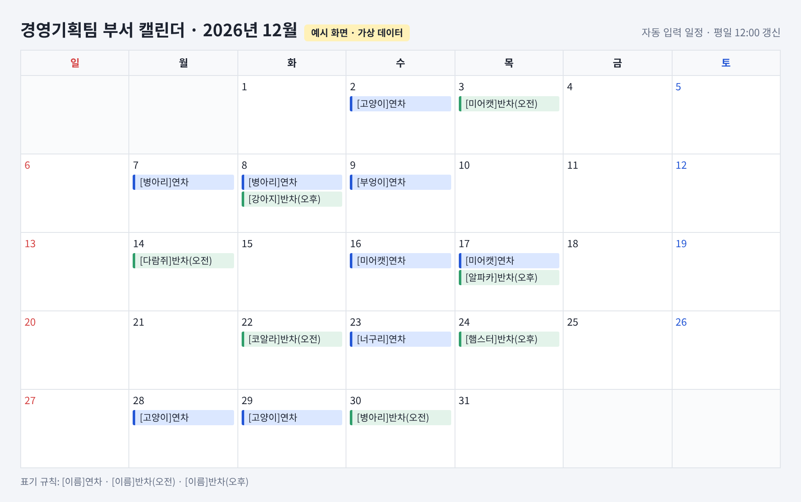
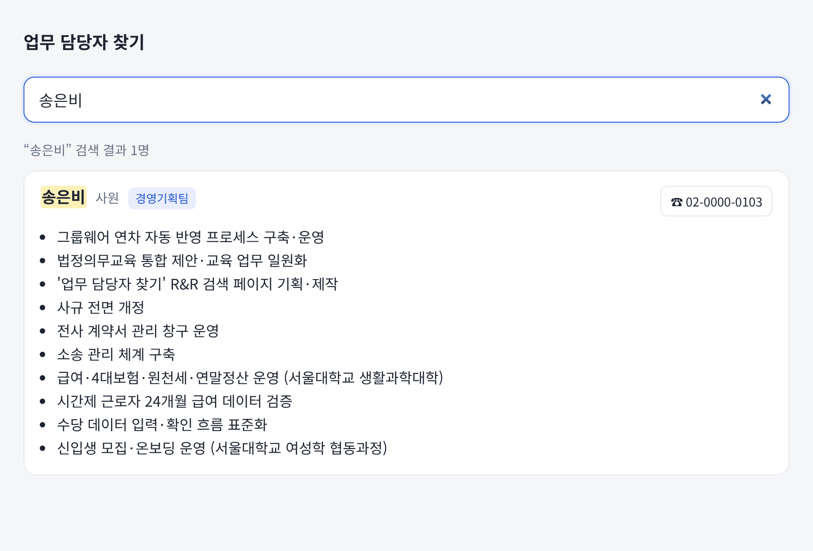

약 400만 원
급여 공제액과 납부액의 차액, 24개월·약 90건을 대조해 원인 규명
260만 원
과공제로 확인되어 환급 처리한 금액
0건
직원 공백 기간을 포함한 1년간 법정 신고 오류
67%
27년 통합 시 법정의무교육비 24년 대비 감소 추정(계획)
사례 구성
01
신입생 모집·온보딩 세미나 재설계
문제지원자가 설명회를 거쳐 입학하고 적응하기까지가 한 사람의 경험이라고 보고, 단계마다 무엇을 궁금해하는지 확인해야 한다고 판단했습니다.
진단설명회, 서류 접수, 심사 일정과 장소, 온보딩이 따로 운영되면 지원자에게는 끊긴 경험이 됩니다.
실행모집 과정 전체를 운영하고, 신입생의 관심사를 사전 조사해 세미나 커리큘럼과 강사진에 반영했습니다.
결과신입생 4~5명 규모의 온보딩 세미나를 수요조사 기반으로 재설계해 운영했습니다.
지원자가 지나가는 경로
- 입시설명회기획·운영
- 지원 서류접수·관리
- 심사일정 조율·장소 섭외
- 신입생 수요조사관심사 사전 파악
- 온보딩 세미나커리큘럼·강사진에 반영
02
탕비실 익명 게시판 도입
문제업무 협조를 요청하거나 의견을 낼 때 편하게 말할 수 있는 통로가 필요하다고 판단했습니다.
진단의견이 들어오는 것만으로는 부족하고, 받아들여졌다는 것이 보여야 다음 의견이 나옵니다.
실행별도 지시와 예산 없이 익명 게시판을 자발적으로 도입하고, 반영된 의견에는 표시를 달았습니다.
결과행정실 안에서 간식을 주제로 한 대화가 늘고, 업무 협조 요청도 더 부드러워졌습니다.
의견이 돌아오는 구조
- 익명으로 의견 남기기탕비실 게시판
- 의견 확인담당자가 직접
- 반영된 의견에 표시되돌려주기
- 대화·협조 분위기 변화다음 의견으로 이어짐
03
시간제 근로자 24개월 급여 데이터 검증
문제세금 통장 잔액과 급여 공제액이 맞지 않는 약 400만 원 차액을 발견했습니다.
진단원인을 모르는 상태에서 추측으로 고치지 않고, 건별로 대조해 어긋난 지점부터 확인해야 한다고 판단했습니다.
실행공제액과 실제 납부액을 한 줄씩 대조하는 엑셀을 직접 설계해 24개월·약 90건을 전수 검증했습니다.
결과원인을 규명해 과공제 260만 원을 환급하고, 나머지는 분석 자료와 함께 인수인계했습니다.
약 400만 원 차액의 처리
260만 원 환급
140만 원 인수인계
환급 이후에도 정리되지 않은 140만 원은 분석 자료와 함께 넘기고, 관리 기준을 문서로 남겼습니다.
24개월 전수 대조 (약 90건)
칸 하나가 한 달입니다. 월별 공제액과 실제 납부액을 건마다 대조했습니다.
04
법정의무교육 통합 제안
문제ESG 평가 자료를 취합하다가 본사와 사업장이 법정의무교육을 각각 계약하고 단가도 다르다는 사실을 발견했습니다.
진단24·25년 지출과 26년 견적을 비교해, 분산 계약이 비용과 관리 두 측면에서 비효율임을 확인했습니다.
실행본사 통합 관리안을 전담 작성하고, 교육 업무를 인사총무팀으로 일원화하는 안을 직접 기획해 제안했습니다.
결과제안이 승인되어 교육 업무 이관을 마쳤고, 27년 사업장 통합과 단일 계약을 목표로 추진 중입니다.
법정의무교육비 (24년 = 100)
25·26년 계약은 인사총무팀이 체결했고, 27년은 통합안을 기준으로 한 추정입니다. 금액은 비공개로 하고 24년 대비 비율로만 표시했습니다. 계약업체는 2곳에서 1곳으로 줄이는 것이 목표입니다.
업무 구조의 변화
BEFORE
- 본사와 사업장이 각각 계약
- 업체마다 단가가 다름
- 교육 업무 담당이 흩어져 있음
AFTER (추진)
- 본사 통합 관리안으로 단일 계약 추진
- 교육 업무를 인사총무팀으로 일원화
- 27년 사업장 통합이 목표
05
그룹웨어 연차 자동 반영 프로세스
문제결재가 끝난 휴가를 부서 캘린더에 반영하려면 기안문을 하루에도 여러 번 확인하고 건마다 직접 입력해야 했습니다.
진단입력 대상과 표기 방식이 정해져 있지 않아 사람이 매번 판단했습니다. 규칙을 정하면 자동으로 처리할 수 있는 일이라고 보았습니다.
실행입력 대상을 결재 완료된 오늘 이후 휴가로 한정하고 유형별 표기 규칙을 정의해, 평일 점심시간에 자동 실행되도록 설계했습니다.
결과건당 3~5분의 수기 입력과 하루 여러 번의 기안문 확인이 필요 없어졌습니다.
자동 입력 흐름
- 휴가 기안 결재 완료그룹웨어 전자결재
- 대상 필터부서원 · 오늘 이후 휴가
- 표기 규칙 적용[이름]반차(오전) 등
- 부서 캘린더 자동 입력평일 점심시간 실행
BEFORE
- 기안문을 하루에도 여러 번 확인
- 건당 3~5분 수기 입력
- 담당자에 따라 표기가 달라질 수 있음
AFTER
- 평일 점심시간 자동 확인·입력
- [이름]반차(오전) 형식으로 표기 통일
- 수기 입력과 반복 확인 제거

예시 화면(가상 데이터). 자동 입력 일정이 [이름]연차, [이름]반차(오전) 형식으로 표시됩니다.
06
업무 담당자 찾기 R&R 검색 페이지
문제ESG 관련 업무가 늘면서 현업이 누구에게 협조를 요청해야 할지 몰라 헤맨 경우가 두세 번 있었습니다.
진단담당자 정보가 사람의 기억에 의존하고 있어, R&R을 조직의 기준으로 정리해 검색할 수 있게 만들어야 한다고 판단했습니다.
실행경영지원부문 R&R을 검색 가능한 구조로 재정리하고, 시안을 AI 도구로 직접 제작해 IT팀에 검토를 요청했습니다.
결과IT팀이 인사팀에 전사 R&R 정리를 요청해 둔 단계까지 진행됐습니다. 개인이 만든 시안이 전사 논의로 이어졌습니다.
개인의 발견에서 조직의 기준까지
- 업무 협조 필요현업이 담당자를 몰라 헤맴
- R&R 재정리경영지원부문 업무를 검색 구조로
- 시안 직접 제작AI 도구 활용
- IT팀 검토 요청연말 R&R 확정 후 타 부문 확대

예시 화면(가상 데이터). 이름과 연락처는 모두 임의로 만든 값입니다.